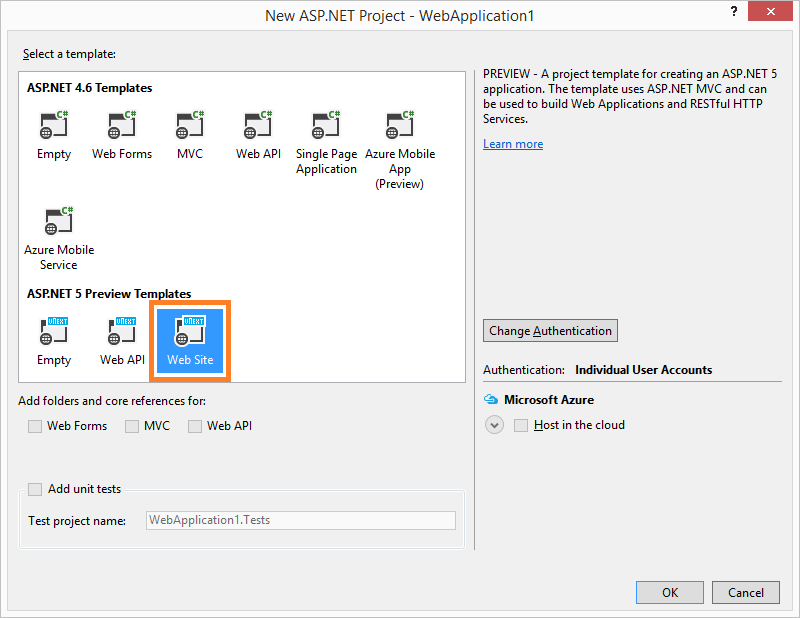
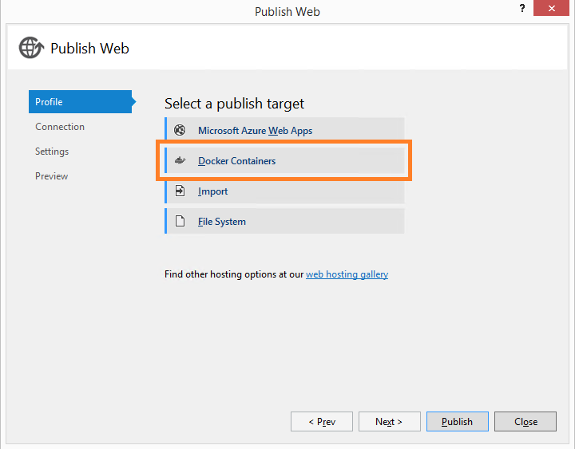
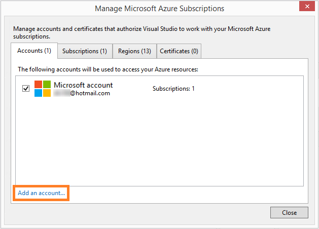
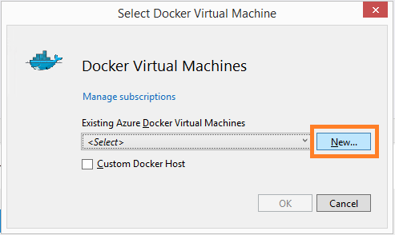
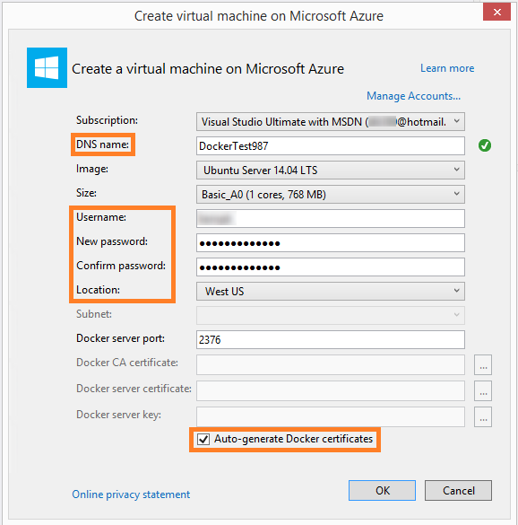
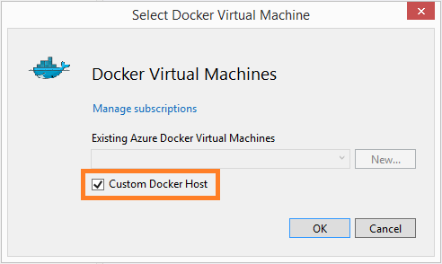
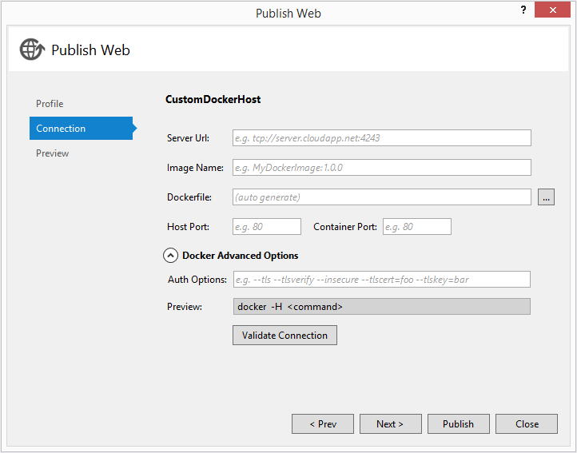

Publish to a Docker Image¶
Docker is a lightweight container engine, similar in some ways to a virtual machine, which you can use to host applications and services.
This example shows you how to use the Visual Studio 2015 RC Tools for Docker extension to publish an ASP.NET 5 app to an Ubuntu Linux virtual machine (referred to here as a Docker host) on Azure with the Docker extension installed along with an ASP.NET 5 web application. You can publish the app to a new Docker host hosted on Azure, or to an on-premise server, Hyper-V, or Boot2Docker host by using the Custom Host setting. After publishing your app to a Docker host, you can use Docker command-line tools to interact with the container your app has been published to.
Create and publish a new Docker container¶
In these procedures, you create a new ASP.NET 5 web application project, publish a Docker container to Azure, and then publish the web app project to the Docker container.
Add an ASP.NET 5 web application project¶
Create a new ASP.NET web application project. On the main menu, choose File, New Project. Under C#, Web, choose ASP.NET Web Application.
In the list of ASP.NET 5 Preview Templates, choose Web Site and then choose the OK button.

Publish the project¶
On the ASP.NET project’s context menu, choose Publish.
In the Select a publish target section of the Publish Web dialog box, choose the Docker Containers button.
If you don’t see a Docker Containers option, make sure you have installed the Visual Studio 2015 RC Tools for Docker and that you selected an ASP.NET 5 Web Site template in the previous step.
The Select Docker Virtual Machine dialog box appears. This lets you specify the Docker host in which you want to publish the project. You can choose to create a new Docker host or choose an existing VM hosted on Azure or elsewhere. For this example, we’ll use an Azure Docker host.
If you’re already logged into Azure, skip to step 5. If you’re not logged in, choose the Manage subscriptions link.
In the Manage Microsoft Azure Subscriptions dialog box and choose an existing Azure account. If you aren’t logged into Azure, choose the Add an account link, sign in to Azure, and then click the Close button.
Choose an existing Docker host or create a new one. If you’re using an existing Docker host, choose it in the Existing Azure Docker Virtual Machines list, choose the OK button, and then go to step 7. Otherwise, choose the New button and continue to the next step.
As an alternative, you can choose to publish to a custom Docker host. See Provide a custom Docker host later in this topic for more information.
Enter the following information in the Create a virtual machine on Microsoft Azure dialog box. When you’re done, choose the OK button. This creates a Linux virtual machine with a configured Docker extension.
Property Name Setting DNS Name Enter a unique name for the virtual machine. If the name is accepted by Azure, a green circle with a white checkmark appears to the right. If the name isn’t accepted, a red circle with a white x appears. In that case, enter a new unique name. Image Enter an OS image to use in the Docker host, if any. For this example, leave this setting at Ubuntu Server 14.04 LTS. Username Enter a unique user name for the virtual machine. Password Enter a password for the local user and then confirm it. Location Change this setting to the region closest to your location. Auto-generate Docker certificates Check this box if you want certificates and keys to be automatically generated for you. Clear this box if you want to provide existing certificates and keys. After you choose OK, the virtual machine will begin to be created.
You’ll get a message that the virtual machine is being created in Azure. You can check on the progress of this operation in the Output window.
After the Docker host is fully provisioned in Azure, you can check your account on the Azure portal. The virtual machine will appear under the Virtual Machine category on the Azure portal.
Now that the Docker host is ready, go back and publish the web app project. On the context menu for the web application project node in Solution Explorer choose Publish.
On the Connection tab in the Publish Web dialog box, choose the Validate Connection box to make sure the Docker host is ready. If the connection is good, choose the Publish button to publish the web app.
The first time you publish an app to a Docker host, it will take time to download any of the base images that are referenced in your Dockerfile (such as FROM imagename in the Dockerfile).
Provide a custom Docker host¶
The previous procedure had you create a Docker virtual machine hosted on Azure. However, if you already have an existing Docker host elsewhere, you can choose to publish to it instead of Azure.
How to provide a custom Docker host¶
In the Select Docker Virtual Machine dialog box, select the Custom Docker Host check box.
Choose the OK button.
In the Publish Web dialog box, add values to the settings in the CustomDockerHost section, such as: the server URL, image name, Dockerfile location, and host and container port numbers.
In the Docker Advanced Options section, you can view or change the Auth options and Docker command line.
After you’ve entered in all the required values, choose the Validate Connection button to ensure the connection to the Docker host works properly.
If the connection works properly, choose the Next button to see a list of the components that will be published, or choose the Publish button to immediately publish the project.
Test the Docker host¶
Now that the project has been published to a Docker host on Azure, let’s test it by checking its settings. Because the Docker command line tools install with the Visual Studio extension, you can issue commands to Docker from a Windows command prompt.
The procedure below is for communicating with a Docker host that’s been deployed to Azure.
How to test the Docker host¶
Open a Windows command prompt.
Assign the Docker host to an environment variable. To do this, enter the following command (Substitute the name of your Docker host for <NameofAzureVM>):
Set docker_host=tcp://<NameofAzureVM>.cloudapp.net:2376
Invoking this command prevents you from having to add
–H (Host) tcp://<NameofAzureVM>.cloudapp.net:2376to every command you issue.If you want, you can issue commands like these to test that the Docker host is present and functioning.
Command line Description docker --tls infoGet Docker version info. docker --tls psGet a list of running containers. docker --tls ps –aGet a list of containers, including ones that are stopped. docker --tls logs <Docker container name>Get a log for the specified container. docker --tls imagesGet a list of images.
For a full list of Docker commands, simply enter the command docker in the command prompt. For more information, see Docker Command Line.
Next steps¶
Now that you have a Docker host, you can issue Docker commands to it. To learn more about Docker, see the Docker documentation and the Docker online tutorial.